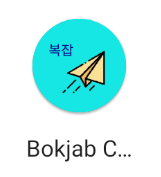

Bokjab Chat
📱 Project Overview
Bokjab Chat was a comprehensive final project that challenged our team to build a feature-rich Android application combining real-time communication with dynamic weather services. The assignment required us to create a chat platform with friend request functionality while integrating a dedicated weather component.
This project provided valuable experience in full-stack mobile development, requiring coordination between Android frontend development, cloud backend services, and third-party API integration. We built the frontend using Android Studio with Java and XML, implemented backend services with JavaScript and SQL, and deployed everything through Heroku's cloud platform.
🔧 Technical Stack
💻 My Contributions
Authentication System Support
Contributed to frontend implementation of the sign-in process, focusing on smooth user experience and collaborating with backend team for API integration.
Weather Integration - Primary Focus

Implemented comprehensive weather system using OpenWeatherMap API with automatic location detection, fallback to Seattle, zip code search, 5-day and 24-hour forecasts, and dynamic UI updates. Features recycler view for scrolling forecasts and location-based content sections.
Home Page Integration

Integrated weather information on home page, prioritizing data based on user's current location or most recent search for application consistency.
🎯 Key Features Implemented
- Real-time weather data from OpenWeatherMap API with GPS integration
- Dynamic UI components responding to weather conditions
- 24-hour and 5-day forecasts with responsive design
- Cross-page weather state management